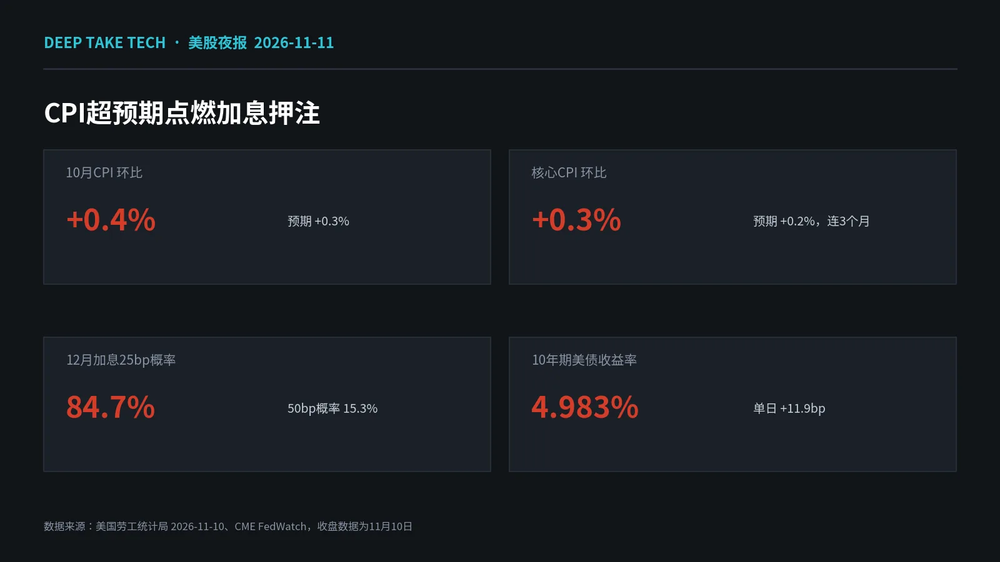

边缘深析 · EDGE INSIGHT
CPI超预期点燃加息押注：12月争论从"加不加"变成"加多少"
10月CPI环比+0.4%超预期，核心CPI连续第三个月+0.3%；12月加息25bp概率84.7%，50bp概率从1.1%跳到15.3%，10年期美债收益率逼近5%——市场争论的已不是加不加，而是加多少。
DEEP TAKE · 本篇判断12月加息25bp几成定局，50bp是尾部风险不是基准；市场跌的是"加多少"的不确定性，不是经济本身。
CPI 环比 +0.4% · 预期 +0.3%
核心 CPI +0.3% · 连续第三个月
12 月加息 25bp 概率 84.7%
50bp 概率 15.3% · 前一日 1.1%
10 年期美债 4.983% · +11.9bp
